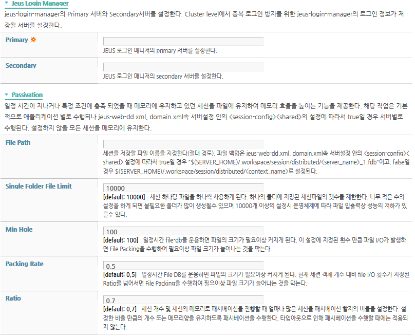

내용 목차
본 장에서는 클러스터링 환경에서 세션 트래킹을 위해 운용되는 분산 세션 서버의 구조, 동작 및 설정 방법 등에 대해서 설명한다.
세션 서버는 클라이언트의 세션 데이터를 관리하거나 백업하는데 사용된다. 그 중에서도 특히 여러 웹 서버들과 서블릿 엔진들이 클러스터링된 환경에서 세션 데이터를 관리할 때 유용하다. 세션 데이터의 관리 방식인 세션 서버로 분산식 세션 서버를 운용한다.
참고
JEUS 6까지는 중앙식 세션 서버가 주로 사용되었으나, 시스템의 중앙 집중으로 인한 문제를 줄이기 위해 JEUS 7 이후부터는 분산식 세션 서버만이 사용된다.
분산 세션 서버는 세션 클러스터링 기능을 제공하면서 확장성 및 안정성을 개선한 방식이다. 따라서 대규모 클러스터링 환경에서 성능을 발휘할 수 있다.
분산 세션 서버는 기본적으로 세션 서버로서의 동작면에서는 기존의 중앙 세션 서버와 동일하다. 여러 서블릿 엔진들로 구성된 클러스터링 환경에서 동일한 클라이언트에서 요청된 일련의 요청들이 특정 서블릿 엔진에서 처리되지 않더라도 세션을 계속 유지해주는 기능을 제공한다.
분산식 세션 서버는 해당 세션들의 관리 주체들이 분산되어 있음을 의미하며, 이에 따라 높은 확장성을 제공한다.
분산 세션 서버의 특징은 다음과 같다.
-
여러 개의 서블릿 엔진으로 구성된 클러스터링 환경에서 지속적인 세션 유지가 가능하다.
-
바로 이전의 요청을 처리하던 서블릿 엔진이 다운되어도 다른 서블릿 엔진들이 이후의 요청을 처리할 때 세션이 끊기지 않도록 한다.
-
분산식 프로토콜을 사용하기 때문에 클러스터링 규모가 커지더라도 확장성이 용이하다.
분산 세션 서버는 세션 객체를 서비스하는 서버가 각각의 서블릿 엔진(웹 엔진) 또는 각각의 EJB 엔진에 분산되어 있는 분산식 구조이다.
분산 세션 서버 방식은 클러스터링에 참여하는 모든 엔진 내에 독립적인 분산 세션 서버가 존재하고, 이들 분산 세션 서버들이 Peer-to-Peer로 다른 엔진의 분산 세션 서버와 통신하여 지속적인 세션 서비스를 제공한다.
다음은 분산 세션 서버 방식을 사용하여 4개의 웹 엔진을 세션 클러스터링하는 구조이다.
위의 구조도에서 화살표는 분산 세션 서버 간의 소켓 연결을 나타낸 것이다. 항상 모든 연결을 맺는 것이 아니고, 연결에 대한 가능성을 의미한다. 일반적으로 연결이 필요없으며 세션 유지를 위해 다른 엔진과의 통신이 필요한 경우에만 연결을 맺고 유지한다. 장애 발생의 경우를 제외하고 연결은 보통 하나씩만 갖는다.
다음은 웹 엔진의 서브 컴포넌트로 동작하는 분산 세션 서버의 내부 구조이다.
-
-
엔진의 세션 관리를 총괄하는 모듈이다. 로컬 메모리, 파일 및 다른 리모트 분산 세션 서버로부터 세션을 얻어오거나 관리한다.
-
로컬 웹 엔진은 getSession을 통해 세션 매니저로부터 사용할 세션 객체를 얻어온다.
로컬 메모리의 Cached Session, Local File Storage Session(getLocalStorageSession), Remote Session(getRemoteSession) 순서로 세션을 얻어온다.
-
메모리의 Cached Session은 일정주기(Passivation Timeout) 동안 사용하지 않으면 passivateLocal을 통해 파일에 저장되고 메모리에서 삭제된다.
-
수정된 세션은 리모트 백업이 있을 경우 RemoteWebEngine를 통해, 백업 서버로 정해진 다른 웹 엔진의 분산 세션 서버로 in-memory 백업된다(backupSession).
수정된 세션은 'Backup Level' 설정에 따라 다르게 적용된다. 'Backup Level'이 'all'일 경우 항상 'get'일 경우 getter와 setter의 호출할 때, 'set'일 경우 setter호출할 때에만 (setAttribute, removeAttribute, setMaxInactivateInterval)의 세션 operation이 발생했을 때 수정된 세션으로 판단한다.
'Backup Level' 항목의 설정값에 대한 자세한 설명은 “2.10.3. 분산식 세션 서버 설정”을 참조한다.
-
다른 리모트 웹 엔진으로부터 migrate 요청이 온다면 로컬 메모리의 Cached Session, Local File storage순으로 세션을 반환한다. 이때 로컬에 존재하는 세션은 삭제해서 ownership을 다른 리모트 분산 세션 서버에게 넘기게 된다.
-
-
-
자신의 분산 세션 서버를 백업으로 선택한 다른 엔진의 분산 세션 서버가 주기적으로 전송하는 백업 세션 객체를 관리한다. 이 백업 세션 객체는 원본을 가지고 있는 엔진에 장애가 발생한 경우 대신하여 세션을 제공한다.
-
자신을 백업으로 지정한 리모트 웹 엔진이 전송하는 백업 세션을 받아서 저장 및 관리한다(backupSession, getBackupSession).
-
메모리의 Cached Session은 일정 주기(Passivation Timeout) 동안 사용하지 않으면 passivateBackup을 통해 파일에 저장되고 메모리에서 삭제된다.
-
로컬에서 수정된 세션 객체는 조건이 만족되면 지정된 리모트 분산 세션 서버로 백업된다. 이러한 백업은 요청이 끝나면 바로 수행되어서 장애 상황에서의 Failover가 가능하도록 한다.
-
다른 리모트 웹 엔진로부터 Backup Store에 migrate 요청이 온다면 로컬 메모리의 Cached Session, Local File Storage순으로 세션을 반환한다.
-
-
-
리모트 웹 엔진에 있는 세션들에 대해서 특정 operation을 할 경우 중재 역할을 하는 모듈이다.
해당 엔진은 dynamic한 환경을 고려하여 운용된다. 즉, 기동환경 중에 운용하는 서버가 추가되거나 제거된 경우 해당 상황에 적절한 백업을 선택하여 운용되고, 이것은 환경설정 중심에서 벗어난 큰 특징 중 하나이다. 리모트 엔진(RemoteEngine)에 대한 연결은 지속적인 ping을 통한 확인이 아닌 SCF를 통한 방식으로 지속적인 장애 상황에서의 불필요한 오류 상황을 제거해준다.
리모트 웹 엔진로부터의 getSession(), removeSession() 등을 예로 들 수 있다.
참고
기존 환경 중심의 구조에서는 설정으로 인해서 고정된 백업 엔진만을 바라보게 되었지만 dynamic하게 변화하는 리모트 엔진에 대해서 유동적인 변경이 가능하도록 설계되었다.
-
-
-
리모트 웹 엔진로부터 세션의 특정 operation 요청이 들어오면 가장 먼저 요청을 처리 및 분배해주는 모듈이다.
-
분산 세션 서버 방식은 세션 라우팅 기능을 기본으로 동작한다. 세션 ID에 특정 서버의 이름을 붙여서 발급하여 기존에 생성된 서버의 위치를 알고 해당 정보로부터 세션을 유지한다. 그렇기 때문에 세션 라우팅 기술을 강제로 사용하지 않을 경우에는 성능의 효율이 떨어진다.
세션 라우팅을 지원하는 웹 서버를 앞단에 배치하면 정상적인 경우 세션 객체가 존재하는 웹 엔진으로 요청이 라우팅될 것이다. 따라서 이러한 경우의 동작 방식은 세션 라우팅에 의한 세션 클러스터링과 동일하다. 이에 대한 내용은 “1.3.2. 클러스터 환경에서 동작”을 참고한다.
세션 라우팅 기능을 기본으로 동작하는 분산 세션 서버 방식에서는 SessionKey를 사용한다.
다음은 웹 엔진에서 사용되는 SessionKey의 예제이다.
<SessionID>.<primary-engine-name> 예) XXX.domain1/server1
| 항목 | 설명 |
|---|---|
| XXX | <SessionID>를 상징적으로 나타낸 것으로 실제 <SessionID>는 이보다 훨씬 긴 Random String 형태이다. |
| domain1/server1 | 라우팅 정보를 의미한다. domain1이라는 서버의 서블릿 엔진을 의미한다. |
각 엔진은 세션 라우팅에 사용하는 세션 라우팅 ID를 하나씩 부여받는다. 이 ID는 웹 서버에 웹 엔진이 접속할 때 웹 엔진을 구분하는 구분자로 사용된다. 세션 라우팅 ID는 설정에 의해 자동 생성된다.
[그림 2.3]의 3개의 웹 엔진은 다음과 같은 세션 라우팅 ID 및 백업 서버의 세션 라우팅 ID가 할당되었다고 가정한다.
-
WebEngine(server1)
-
세션 라우팅 ID : domain1/server1
-
백업 서버의 세션 라우팅 ID : domain1/server2
-
-
WebEngine(server2)
-
세션 라우팅 ID : domain1/server2
-
백업 서버의 세션 라우팅 ID : domain1/server3
-
-
WebEngine(server3)
-
세션 라우팅 ID : domain1/server3
-
백업 서버의 세션 라우팅 ID : domain1/server1
-
세션 라우팅 ID가 할당된 분산 세션 서버에 의한 세션 트래킹의 Failover 구조는 다음과 같다.
다음은 [그림 2.3]의 동작에 대한 설명이다.
-
웹 서버는 세션 라우팅 ID를 분석하여 WebEngine(server1)으로 해당 Request의 전송을 시도하지만 WebEngine(server1)은 fail 상태이다.
-
웹 서버는 다른 WebEngine 중에서 임의로 하나를 선택하여 요청을 보낸다. 본 예제에서는 WebEngine(server3)을 선택하였다.
웹 서버로부터 요청을 전달받은 WebEngine(server3)은 세션 라우팅 ID를 분석한다. 분석 결과 이 요청을 처리할 세션 객체는 WebEngine(server1)에 있으며, 해당 세션의 백업은 WebEngine(server2)에 존재한다는 것을 알게 된다.
-
분산 세션 서버인 WebEngine(server3)은 요청 분석 결과에 따라 WebEngine(server1)에 접속하여 세션 객체를 가져오려고 시도한다(Primary Migration). 그러나 WebEngine(server1)에 장애가 발생했으므로 해당 요청의 시도는 실패한다.
-
요청이 실패로 끝났기 때문에 WebEngine(server3)은 WebEngine(server1)의 백업 서버인 WebEngine(server2)로 다시 시도한다(Backup Migration). WebEngine(server2)은 요청에 대해 백업해놓은 세션 객체를 WebEngine(server3)에게 넘긴다.
-
성공적으로 세션 객체를 가져온 WebEngine(server3)는 이후 클라이언트의 요청을 처리하여 응답 메시지를 클라이언트에게 보낸다. 이때 새로운 SessionKey를 작성하여 보내기 때문에 클라이언트의 SessionKey가 변경되고 이후 요청이 WebEngine(server3)로 들어온다. 새로운 SessionKey를 작성할 때는 세션 라우팅 ID 부분만 자신의 것으로 치환한다.
웹 서버가 세션 라우팅을 지원해도 웹 서버에 세션 라우팅 ID에 해당하는 웹 엔진으로의 연결이 존재하지 않거나 해당 웹 엔진에 장애가 발생하여 요청을 전달할 수 없는 경우에 웹 서버는 세션 라우팅을 지원할 수 없다. 이러한 경우 웹 서버는 보통 임의로 선택된 다른 웹 엔진으로 요청을 전달한다.
다음은 세션 라우팅 기능을 사용하지 않는 상황을 가정할 경우의 [그림 2.3]의 분산 세션 서버 동작에 대한 설명이다.
-
세션 라우팅 기능을 사용하지 않는 상태라면 세션 라우팅 ID는 존재하지 않는다. 웹 서버는 임의의 WebEngine을 선택해서 요청을 보낸다. 본 예제에서는 WebEngine(server1)이 선택되었다.
-
웹 서버는 WebEngine(server1)이 fail 상태임을 감지하고 다시 임의의 WebEngine을 선택하여 요청을 보낸다. WebEngine(server3)이 선택되었다.
-
분산 세션 서버인 WebEngine(server3) 또한 해당 세션에 대한 라우팅 정보를 알 수 없기 때문에 현재 접속 중인 분산 세션 서버로 순서대로 요청한다. 해당 요청은 WebEngine(server1)에 요청을 보냈으나 이 시도는 실패하였다.
-
분산 세션 서버는 해당 요청을 다시 WebEngine(server2)에 보내고 WebEngine(server2)은 해당 세션을 전달한다.
-
세션을 전달받은 WebEngine(server3)은 SessionKey의 변경 없이 클라이언트로 보낸다. 이에 따라 다음 요청도 해당 세션을 가지고 있는 WebEngine(server3)으로 오지 않을 수 있다.
참고
설명을 위해서 라우팅 정보를 domain1/server1과 같이 표기했으나 운용 중에는 해당 정보가 인코딩되어 동작한다.
본절은 분산 세션 서버에서 새롭게 추가된 기능인 중복 로그인 방지 기능에 대해 설명한다.
중복 로그인 방지 기능은 기본적으로 애플리케이션에서 관리 하는 중복 로그인 관리 기능 중 기본적인 기능을 분산식 세션 서버에서 제공하는 서비스이다.
분산식 세션 서버의 중복 로그인 방지 기능을 사용하게 되면 애플리케이션의 아이디에 대해 중복된 로그인을 허용하지 않음을 내부적으로 지원한다. 즉, 다른 세션에 대해 동일한 아이디로 로그인을 수행한 경우 기존의 로그인을 수행하였던 세션을 제거하여 근본적으로 중복 로그인을 방지한다.
중복 로그인 방지 기능을 위해 Login Manager는 기존의 중앙 세션 서버와 유사하게 구성된다. 여러 서버들 간의 클러스터링 안에서 로그인 정보를 저장하는 서버를 지정하여 동작하며 장애 상황을 고려하여 secondary 서버를 구성하여 동작한다.
중복 로그인 방지 기능은 개별 애플리케이션별로 설정 가능하며 로그인 정보를 애플리케이션별로 관리된다. 해당 설정은 jeus-web-dd.xml에 <use-jeus-login-manager>를 true로 설정한다.
중복 로그인 방지에 대한 동작은 다음과 같다.
다음은 [그림 2.4]의 동작에 대한 설명이다.
-
SessionA를 사용중인 Client A는 Web EngineA에 ID:UserA로 로그인을 시도한다.
-
Web EngineA는 Login Manager에 로그인 정보를 등록한다.
-
Login Manager는 로그인에 대한 ACK를 Web EngineA에 전달한다.
-
Web EngineA는 요청에 대한 Response를 Client A로 전달한다.
-
SessionB를 사용 중인 서로 다른 Client B가 동일한 ID:UserA로 로그인을 시도한다.
-
Web EngineB는 Login Manager에 로그인 정보를 등록한다.
-
Login Manager는 동일한 ID:UserA에 대해 중복 로그인이 일어났음을 알게 된다.
-
Login Manager는 기존의 로그인을 수행한 SessionA를 지닌 Web EngineA에 SessionA를 제거하라는 명령을 보내며, Web EngineA는 해당 세션을 제거한다.
-
Login Manager는 로그인에 대한 ACK를 Web EngineB에 전달한다.
-
Web EngineB는 요청에 대한 Response를 Client B에 전달한다.
참고
로그인은 애플리케이션에서 이벤트이므로 Jeus Login Manager에서 로그인 이벤트를 전달하는 방법에는 제약 사항이 존재한다. Jeus Login Manager에서는 기본적으로 "JEUS_LOGIN_KEY"로 setAttribute를 수행하였을 경우 로그인으로 판단한다. 이 값은 jeus-web-dd.xml의 Properties에 "jeus.application.login.key"로 변경 가능하다. 동일한 약속된 key로 removeAttribute를 수행하였을 경우 로그아웃을 수행하며 invalidate된 세션은 자동으로 로그아웃이 수행된다.
본 절은 분산 세션 서버의 Failback 기능에 대해 설명한다.
Failover 기능은 장애 상황에 대처 하여 기존의 서비스를 지속적으로 이뤄지도록 해주는 세션 서버의 기본적인 기능이다. 즉, 세션의 생성 이후 백업에 전달된 세션으로 인해 특정 서버가 장애가 발생하여도 세션의 유실이 발생하지 않으며, 기존 세션으로 지속적인 서비스를 하도록 하는 기능이다.
새롭게 제공하는 Failback 기능은 위의 1차적인 장애 상황에 대한 고려가 아닌, 연속적인 서버의 재시작 또는 장애 서버의 복구시에 제공되는 서비스이다. 해당 부분은 단순한 예로 순차적으로 서버를 재기동 하는 시나리오로 설명한다.
다음 그림은 Failback를 지원하지 않는 상태에서의 진행 상황에 대한 설명이다.
처음 Server1이 재기동되면 Server1이 가지고 있던 세션 "A"는 Server2의 백업에만 존재하게 된다. 다음으로 Server2가 재기동되면 Server2의 백업이 제거 되기 때문에 세션 "A"는 전체 시스템에서 제거 되게 된다. 만약 이후 세션 "A"의 요청이 온다면 세션 유지에 실패하게 되고 새로운 세션이 생성된다. 이는 기존의 분산식 세션 서버에서는 백업으로 받은 세션에 대한 처리를 수행하지 않았기 때문이다.
다음은 Failback를 지원하는 경우 결과이다.
처음 Server1이 재기동되었을 경우 DumpToBackup에 의한 동작은 동일하다(세션 "B"가 유지되는 모습). 이후 추가적으로 Failback 기능에 의해 Server2가 지닌 세션 "A"가 다시 Server1로 전달되는 모습을 확인할 수 있다.
다음으로 Server2가 재기동되었을 경우에도 최초 환경과 동일하게 세션들이 유지되는 모습을 확인할수 있다.
참고
Failback을 지원하지 않더라도, 서버 장애가 발생하였을 때 특정 세션에 대한 액세스가 일어난다면 해당 세션은 정상적으로 유지 된다(Failover 기능). 이는 백업 세션의 존재로 가능하며, 이렇게 액세스된 세션은 다시 백업으로 전달되기 때문에(dumpToBackup) 추후에도 정상 동작이 가능해진다. 이를 위해 특정 웹 서버에서는 기존의 모든 세션에 대한 액세스를 수행하여 세션 유지를 위해 노력하기도 하였다.
Failback 기능은 기본적으로 설정에 의해 reply-response 방식으로 이뤄지게 된다..
기능의 시작은 자신이 백업 서버로 동작하였던 서버의 재기동을 감지함으로써 시작된다.
-
특정 서버가 재기동되었으며 해당 서버의 세션을 자신이 백업 받았는지 파악한다.
-
자신이 백업 서버로 동작하였던 서버일 경우 재기동된 서버에게 Failback를 받을지 request를 전송한다.
-
설정되었을 경우 재기동된 서버는 Failback 요청을 response로 전송한다.
-
기존에 서버로부터 받은 백업 세션들을 재기동된 서버에게 전송한다.
참고
OOM으로 인한 장애 현상이 있을 경우 해당 기능은 권장하지 않는다. 세션의 과부하로 인해 많은 세션을 백업하였을 경우, Failback에 의해 지속적인 OOM을 유발할 수 있다. 해당 기능은 기존 세션의 끊김없이 서버를 순차적으로 재기동할 경우 롤링 패치 적용의 경우를 위해 제공된다.
본 절은 분산 세션 서버의 기능중 세션의 유지 방식 중 마이그레이션을 수행하지 않고 업데이트 방식을 지원하는 기능에 대한 설명이다.
세션은 한 리퀘스트 안에서 의미가 있는 객체로서 다른 JVM이나 다른 스레드에서 동시 조작등은 스펙상 보장을 하지 않는다. 즉, 애플리케이션의 책임이며 해당 환경은 지양이 되어야 하는 사항이다.
애플리케이션의 구성상 동시 요청을 보내야 한다고 한다면 해당 요청들은 각기 다른 세션을 바라보게 구성하거나 세션을 사용하지 않도록 해야 정상적으로 동작한다. 하지만 세션의 공유는 매우 매력적인 사항이며 해당 사항을 이용하고 애플리케이션을 구성하는 사례들이 증가 하고 있다.
이러한 동시 다발적인 요청이 세션과 연계가 된다면 제약 사항들이 존재하며 그것은 아래와 같다.
-
새로운 세션이 동시에 생성될 가능성이 존재하며, 해당 세션 중 하나의 세션만 쿠키로 유지가 되기에 불필요한 메모리의 낭비가 발생할 수 있다.
각 요청이 다른 JVM으로 이동하거나, 동시에 처리 될 경우에 모두 포함되는 행동이다. 세션이 존재하지 않을 경우 세션을 생성하는 것이 기본적인 동작이기에 동시에 전달된 요청은 각각 새로운 세션을 발급 받게 되는 것을 막을수 없다. 이러한 세션들은 사용자의 브라우저의 쿠키에 저장되는데 해당 쿠키는 결국 하나의 스코프로 관리되어 마지막으로 발급 받게 되는 세션으로 덮어 씌워진다. 이로 인해 다른 요청에 의해 생성된 세션은 별도로 접근할수 없으며 타임아웃에 의해 제거될 수 밖에 없다.
-
세션이 동시에 다른 JVM에서 유지되기 위한 방식에 따라 세션을 유지하지 못할 수 있다. 이 제약 사항 스티키 세션 라우팅과 연계되어 있는 제약사항으로 동일한 서버나 웹 엔진으로 전달되었을 때는 해당되지 않는 문제이다. 애플리케이션의 구성이나 환경으로 인해 다른 JVM으로 요청이 동시에 전달될 때에는 세션 유지하는 방식에 의해 세션이 유지되지 않을수 있다.
-
세션에 동시에 업데이트를 수행할 경우 해당 세션에 반영이 무시될 수 있다.
2번의 사항과 마찬가지로 다른 서버나 웹엔진에 전달되었을 경우에 해당되는 문제이다. 세션의 업데이트는 하나의 요청에 의해서 처리되는 것을 가정하였기에 그 결과의 반영도 세션 생성과 동일하게 타이밍에 의해 반영이 무시될 수 있다.
위의 제약 사항은 JEUS를 떠나서 어떠한 환경에서도 동일하게 발생할 수 있는 사항으로 JEUS에서는 로컬 세션을 효율적으로 사용하기 위해 마이그레이션을 수행하고 있는데 그로 인해 2번 제약사항이 선택적으로 발생할 수 있다.
제약사항에서 언급이 되었듯이 동시 요청이 동일한 서버나 웹 엔진에게 요청이 전달 될 경우에는 특별한 문제가 발생되지 않는다. 하지만 애플리케이션 구성에 의해서 다른 서버로 요청이 동시에 전달 될 경우에는 위와 같은 상황이 발생한다. 이를 막기 위해서 로컬의 세션을 사용하는 효율성에 의해 수행하는 마이그레이션을 수행하지 않는 방식의 기능이 제공된다.
해당 기능이 활성화되었을 때는 아래와 같이 동작한다.
동시 요청이 다른 서버로 가더라도 타겟이 되는 세션을 마이그레이션 하지 않고 카피하여 로컬에서 조작하고, 또한 그 결과를 다시 기존의 서버에게 업데이트 하는 방식을 수행한다. 이러한 동작으로 인해 세션의 유실은 방지 할수 있으며, 단순히 세션의 값을 확인하는 동작에서는 무리없이 서비스가 가능하다. 하지만 최초에 언급한 1번과 3번의 문제는 동일하게 존재하므로 위와 같은 애플리케이션의 구성은 매우 좋지 않은 구조이다.
참고
세션은 단순한 정보를 저장하고 관리하는 임시적인 객체이지 모든 시스템에 동시에 존재하는 데이터 베이스와 같이 사용해서는 안된다. 단순히 객체의 값을 참조하는 경우에만 사용하며, 다른 서버로의 동시 요청이 전달되는 구조 및 설정은 지양해야 한다.
본 절에서는 세션 클러스터 모드에 대해 설명한다.
세션 클러스터링은 단순히 생각하면 세션의 공유를 지원하는 기능이라고 할 수 있다. 세션의 공유는 동일한 스코일 경우 지원하는 것이 중요하며, 스코프가 다를 경우 공유를 막는 것도 중요하다.
JEUS에는 3가지 종류의 세션 클러스터 모드를 지원하며 각 모드에 의해 스코프가 결정된다.
JEUS에서 기본적으로 제공하는 세션 클러스터 모드이다.
서버들을 클러스터링 설정하게 되면 자동적으로 제공되며, 세션 데이터를 클러스터링에 포함된 서버들에서 공유하여 사용할 수 있다. 서블릿의 기본 세션 스코프의 스펙을 준수하기 때문에 여러 개의 애플리케이션이 존재하더라도 서로간 독립적으로 세션관리가 가능하며, 또한 세션 클러스터링의 기본적인 기능들인 장애 상황 극복 및 로드 밸런싱의 처리를 지원한다. 스펙을 준수하여 기본적인 세션 스코프는 애플리케이션이지만, 웹 엔진 세션 매니저에서 제공하는 Shared 설정을 이용하면 클러스터링 맺은 서버 스코프의 세션 클러스터링이 가능하다.
도메인 전체의 서버에 디플로이되는 모든 애플리케이션을 같은 스코프로 간주하는 세션 클러스터를 지원하는 모드이다.
기본 세션 클러스터 모드의 경우는 클러스터에 의존하기에 해당 클러스터에 의한 구조의 제약사항을 받고 있다. 그 중 서버 클러스터로의 디플로이 대상의 강제라고 볼 수 있다. JEUS 6에서는 각각 컨테이너에 별도의 애플리케이션을 디플로이하고 모든 컨테이너의 세션을 공유하여 사용할 수 있었으며 해당 구조를 직관적인 구조에 의해 많이 사용되었다.
다음은 좀더 자세한 예에 대한 설명이다.
-
2개의 노드가 존재하고 각각 2개의 컨테이너를 생성한다.
-
각 컨테이너에는 별도의 애플리케이션을 디플로이한다. 즉, 총 4개의 애플리케이션이 별도의 컨테이너에 존재한다.
-
<shared> 옵션으로 같은 노드 안의 세션을 공유하고, 중앙식 세션 서버를 사용하여 다른 노드의 세션을 공유한다.
-
결과적으로 4개의 각 다른 컨테이너의 모든 세션은 공유된다.
서버 클러스터의 기본 개념과 맞지 않다. 클러스터링을 맺을 경우 디플로이 대상이 클러스터로 강제되기 때문에 모든 서버에 동일한 애플리케이션이 디플로이된다. 정상적 상황 속에 안정적인 서버에서 이러한 강제된 디플로이는 불필요한 리소스 낭비라고 보는 시선이 존재한다. 하지만 클러스터링을 맺었음에도 디플로이된 애플리케이션이 물리적으로 특정 서버에만 존재하여 장애 상황에 서비스를 정상적으로 하지 못하는 것을 막아주는 올바른 방향이다. 이러한 상황속에서도 물리적으로 서버마다 다른 애플리케이션을 디플로이하기 위해서는 클러스터에 참여해서는 불가능하다.
서버 클러스터에 참여하지 않고 세션 클러스터링을 사용하고자 할때 이 모드를 선택하면 된다.
DOMAIN_WIDE 모드는 도메인 구조의 자체 스펙에 어긋나는 사용자 편의를 위한 설정이며 가장 넓게 또한 편리하게 사용할수 있지만 제약사항에 유의해야 한다.
-
EJB와는 관계가 없고, 오직 웹 애플리케이션에만 영향을 미친다.
-
클러스터링 설정과 동시에 설정할 경우 클러스터의 설정은 무시될 수 있다.
-
설정할 경우 도메인 내(domain.xml)의 모든 서버에 대해 적용된다. 일부 서버만을 대상으로 설정하는 것은 불가능하다.
-
<shared> 옵션이 true로 설정되어 모든 서버 내의 모든 애플리케이션의 세션이 공유가 강제로 이루어진다.
참고
서버 클러스터링을 맺었더라도 도메인 와이드 모드를 사용하면 도메인 와이드 세션 클러스터 모드가 동작한다.
특별 정의 스코프 모드는 설정으로 결정되는 방식의 세션 클러스터링이 아니며 기본적인 클러스터링 구성과 관계없이 특정 애플리케이션을 그룹화 하여 세션을 공유하며, 그룹이 여러 개 존재할 경우 사용하는 세션 클러스터링이다. 대부분의 경우는 공유하는 그룹이 1개이기 때문에 위의 기본 스코프나 도메인 스코프의 모드 사용으로 대부분 해결이 가능하다.
그룹이 여러개일 경우 해당 그룹을 애플리케이션에서 정의한 스코프를 선택하여 디플로이되며, 해당 설정에 의해 유지 및 관리가 이뤄진다. 지원되는 세션 클러스터링 자체는 스코프만 차이가 있을 뿐 내부적 동작은 분산 세션 서버와 동일하다. 특별 정의 스코프 기능으로 인해 클러스터 간의 세션 공유도 가능하며, 한 서버 안에 여러 개의 스코프를 구성하는 것이 가능하다.
다음은 해당 기능에 대한 설명이다.
-
server1, server2는 서버 클러스터로 묶여 있으며 해당 클러스터의 이름은 server cluster1이다.
-
server3, serve4도 서버 클러스터로 묶여 있으며 해당 클러스터의 이름은 server cluster2이다.
-
JEUS의 서버 클러스터에 애플리케이션을 디플로이 할 경우에는 클러스터내에 동일한 애플리케이션이 존재하여야 한다.
-
ApplicationA, C : server1, server2
-
ApplicationB, D : server3, server4
-
-
분산식 세션서버의 클러스터링에 의해서 ApplicationA, ApplicationB는 각 각 서로의 클러스터링의 범위 내에서 세션의 유지 및 관리가 이뤄진다.
-
분산식 세션 서버의 특별 정의 스코프 세션 클러스터링에 의해서 ApplicationC, ApplicationD는 서버 클러스터를 넘어선 공유가 가능하다. 즉, server1, server2, server3, server4에서 모두 세션이 유지 및 관리가 된다.
위와 같이 특별 정의 스코프 세션 클러스터를 사용하면 기존의 클러스터에 제한적인 세션 유지를 벗어나서 다양한 애플리케이션의 구성이 가능해진다.
참고
서로 다른 애플리케이션에서 세션이 공유되기 위해서는 기본적으로 애플리케이션 간의 공통 URL이 필요하다. 이는 JEUS의 제약 사항이 아닌 브라우저와 쿠키의 제약 사항이다. 이를 위해 세션 클러스터링을 사용하는 애플리케이션들은 공통 URL을 가져야 하며 이 URL을 세션 쿠키 Path에 설정해 주어야 한다.
본 절에서는 세션 클러스터링의 설정 중 기본 설정에 대해 설명한다.
세션 클러스터링은 단순히 생각하면 세션의 공유를 지원하는 기능이라고 할 수 있다. 세션 공유 지원을 위해서 웹 엔진에는 분산식 세션 서버가 운영되며 해당 세션 서버가 위에서 설명한 여러 가지 기능에 대한 동작을 수행한다. 해당 동작에 대한 설정을 분산식 세션 서버 설정이라고 한다. 해당 분산식 세션 서버의 운영에 대한 설정 외에 도메인 전체적으로 운영되는 기본설정이 존재하며 해당 설정에 대한 설명이다.
WebAdmin를 활용한 세션 클러스터링의 기본설정은 다음과 같다.
WebAdmin의 왼쪽 메뉴에서 [Session]를 선택하면 세션 클러스터링의 설정 페이지로 한다.
다음이 도메인 전체에 적용되는 기본설정 부분이다.
세션 화면에는 크게 Session Cluster와 Specific Scope Cluster 영역으로 분류된다. Session Cluster는 도메인 전체에 적용되는 설정과 common cluster config 설정으로 분류된다.
-
Session Cluster
항목 설명 Cluster Mode -
DEFAULT : 서버 클러스터를 맺을 경우 세션 클러스터를 지원하고 서버 클러스터를 맺지 않을 경우 세션 클러스터를 지원하지 않는다. 애플리케이션 단위의 세션 클러스터가 기본적으로 제공된다. 특별 정의 스코프(SPECIFIC_SCOPE) 세션 클러스터 모드를 사용하고자 할 때에도 DEFAULT 모드로 사용한다. (기본값)
-
DOMAIN_WIDE : 전체 도메인의 모든 서버의 모든 애플리케이션의 세션을 공유하는 세션 클러스터를 지원한다.
각 세션 클러스터링 모드는 스코프만 다를 뿐 동일한 형식의 분산식 세션 서버의 설정을 사용한다. 각 모드별 클러스터링 참여 방법 및 분산 세션 서버의 설정을 하는 방법은 “2.10. 클러스터링 모드별 설정”에서 설명한다.
Session Manager Provider 세션 매니저로 사용할 구현체를 설정하거나 예약어를 설정한다. 예약어 외에는 package 전체 이름을 설정해야 한다.
예약어는 RUNTIME과 JEUS가 존재한다.
-
RUNTIME : JEUS에서 제공하는 프로바이더 외 다른 구현체가 존재한다면 해당 구현체를 사용하도록 설정한다. (기본값)
-
JEUS : JEUS에서 제공하는 다른 구현체가 존재하더라도 JEUS의 구현체를 사용한다.
Exclude Das in Cluster 클러스터에 DAS를 강제로 참여하고 싶지 않을 때 설정한다. 도메인 와이드 모드일 경우에 의미가 있다.
-
true : 클러스터에 DAS가 포함되어 있더라도 클러스터링에 참여하지 않고 스탠다드 얼론으로 동작한다.
-
false : DAS를 다른 서버들과 동일하게 취급하여 클러스터링 참여 여부에 맞게 동작한다. (기본값)
Sticky Encoding Rule 스티키 라우팅의 대상이 되는 정보에 대해 인코딩 룰을 지원한다. 현재는 두 가지의 방식을 지원한다.
-
BASE64 : 설정의 기본값으로 스티키되는 정보를 BASE64 룰에 의해 인코딩하여 전달된다. 세션 아이디를 통해 엔진정보나 도메인 정보가 노출되는 것을 원치 않아 직관적으로 의미 없는 정보로 보이도록 인코딩하여 전달한다. (기본값)
-
RAW : 스티키되는 정보를 인코딩하지 않고 그대로 노출하여 전달한다. 인코딩되는 정보는 내부에서도 직관적으로 어떤 엔진에서의 요청인지에 대한 판단이 어렵기에 디버깅을 위해 설정하거나, 엔진 이름 노출이 보안상 영향을 주지 않을 경우에 설정한다.
Properties 도메인의 모든 클러스터 및 세션 서버에 적용되는 프로퍼티에 대한 항목이다 해당 항목은 Key와 value로 이루어져 있다. -
본 절에서는 세션 클러스터링 모드에 따른 클러스터링 참여 방법 및 분산식 세션 서버 설정의 위치와 공통적으로 적용되는 분산식 세션 서버 설정 방법에 대해 설명한다.
각 클러스터 모드별 클러스터 참여 방법에 대한 설명한다.
기본 세션 클러스터 모드
기본(DEFAULT) 세션 클러스터 모드의 세션 클러스터링 참여는 매우 간단하며, 단순히 서버 간 클러스터링을 설정하면 가능하다.
-
WebAdmin의 왼쪽 메뉴에서 [Clusters]를 선택하면 클러스터 목록 조회 화면으로 이동한다.
-
[LOCK & EDIT] 버튼을 클릭해서 설정변경 모드로 전환한다.
-
클러스터링을 추가하려면 [ADD] 버튼을 클릭하고, 기존의 클러스터링을 변경할 경우에는 Clusters 화면의 조회된 클러스터 목록에서 원하는 클러스터를 선택한다.
-
'Servers' 항목에 도메인 내의 서버들이 표시된다. 다음과 같이 클러스터를 구성할 서버들을 선택한 후 [확인] 버튼을 클릭한다.
-
설정을 완료한 후 변경 내용의 동적 반영을 위해 [Activate Changes] 버튼을 클릭한다.
-
설정 내용이 반영되면 다음과 같이 반영 결과 메시지가 출력된다.
참고
분산 세션 서버의 경우에는 내부적으로 자동 수행을 함으로써 설정 내용이 동적으로 반영된다. 그러나 애플리케이션 스코프로 수행되는 세션 서버의 경우에는 deploy되는 애플리케이션에 따라 재기동이 필요할 수 있다.

도메인 와이드 세션 클러스터 모드
다음은 도메인 와이드(DOMAIN_WIDE) 세션 클러스터 모드의 설정방법에 대한 설명이다.
-
WebAdmin의 왼쪽 메뉴에서 [Session]을 선택하면 Session 화면으로 이동한다.
-
[LOCK & EDIT] 버튼을 클릭해서 설정변경 모드로 전환한다.
-
Session 화면에서 'Cluster Mode'의 항목을 'DOMAIN_WIDE'로 선택한다.
-
설정을 완료한 후 설정변경 내용을 반영하기 위해 [Activate Changes] 버튼을 클릭한다.
-
설정 내용이 반영되면 반영 결과 메시지가 출력된다. 동적 설정 항목이 아니므로 서버를 재시작해야 변경 내용이 서버에 반영된다.
특별 정의 스코프 세션 클러스터 모드
특별 정의 스코프(SPECIFIC SCOPE) 세션 클러스터링의 경우는 위의 DEFAULT와 DOMAIN_WIDE와 같이 모드로 구분되는 설정이 아니며 DEFAULT의 세부 모드라고 볼 수 있다. 즉, DEFUALT를 기본으로 하며 세부적으로 설정한다.
WebAdmin에서 특별 정의 스코프는 다음과 같이 설정한다.
-
WebAdmin 왼쪽 메뉴에서 [Session]를 선택하면 Session 화면으로 이동한다.
-
세션 클러스터링을 추가하기 위해서는 하단에 있는 [ADD] 버튼을 클릭하면 Clusters의 Session Cluster Config 설정 화면과 동일한 화면이 나오며 해당 화면에서 동일하게 개별적인 세션 클러스터링의 설정할 수 있다.
-
개별적인 세션 클러스터링을 적용하기 위해서 다시 확인 이후 [Activate Changes] 버튼을 클릭한다.
-
해당 세션 클러스터링으로 애플리케이션을 deploy하기 위해서는 jeus-web-dd.xml의 <target-session-cluster>에 세션 클러스터링을 적용할 세션 클러스터을 설정해야 한다.
참고
세션 클러스터링은 애플리케이션에서 세션 클러스터링을 결정하는 구조이기 때문에 반드시 jeus-web-dd.xml에 세션 클러스터를 하나 선택하여 설정해야 한다.
WebAdmin에서 전체 분산식 세션 서버는 다음의 3가지 화면에서 설정할 수 있다.
Common Cluster Config
WebAdmin의 왼쪽 메뉴에서 [Session]를 선택하면 Session 화면으로 이동한다.
화면의 기본설정 ([그림 2.10]) 아래에 공용 설정이 위치한다. 나머지 항목에 대한 설명은 “2.10.3. 분산식 세션 서버 설정”을 참고한다.
Common Cluster Config 설정은 기본적으로 설정하는 분산식 세션 서버의 설정으로 기본설정(“2.9. 세션 클러스터 기본 설정”)의 Cluster Mode에 따라 적용 여부가 결정된다.
| 구분 | 설명 |
|---|---|
| DEFAULT | 서버 클러스터의 분산식 세션 서버 설정이 존재하지 않을 경우 이 공용 설정이 사용된다. 서버 클러스터가 맺여져 있지 않거나 서버 클러스터에 설정이 존재한다면 이 공용 설정은 무시된다. |
| DOMAIN_WIDE | 이 공용 설정이 전체 도메인에 적용되는 분산식 세션 서버의 설정으로 사용된다. |
| SPECIFIC_SCOPE | SPECIFIC_SCOPE의 설정이 존재하지 않을 경우 이 공용 설정이 사용된다. SPECIFIC_SCOPE 모드의 Specific scope cluster내 설정을 별도로 하였을 경우에 이 설정은 무시된다. |
Cluster Session Cluster Config
WebAdmin의 왼쪽 메뉴에서 [Clusters]를 선택하면 클러스터 목록 조회가 가능하다.
클러스터를 선택한 후 [Session Cluster Config] 탭을 선택하면 해당 분산식 세션 서버 설정을 할 수 있다.
이 분산식 세션 서버의 설정은 DEFAULT 모드에만 의미가 있다. 클러스터에 분산식 세션 서버 설정이 존재할 경우에 해당 설정이 사용되며 설정을 하지 않을 경우 공용 설정이 사용된다. 각 서버 클러스터의 분산식 세션 서버를 다른 설정으로 운영하고자 한다면 각 각 설정하면 적용되며 설정하지 않을 경우 하나의 공용 설정으로 여러 개의 서버 클러스터의 운영이 가능하다. 화면의 자세한 설명은 “2.10.3. 분산식 세션 서버 설정”을 참고한다.
Specific Scope Session Cluster Config
WebAdmin의 왼쪽 메뉴에서 [Session]를 선택하면 위의 기본설정([그림 2.10]) 가장 아래에 Specific Scope Cluster 조회가 가능하다.
클러스터 이름을 선택하면 해당 분산식 세션 서버 설정이 조회된다.
이 분산식 세션 서버의 설정은 SPECIFIC SCOPE 모드가 사용될 때에만 의미가 있다. 각 스코프 마다 분산식 세션 서버를 다른 설정으로 운영하고자 한다면 각 각 설정하면 적용되며 설정하지 않을 경우 하나의 공용 설정으로 여러 개의 SPECIFIC SCOPE의 세션 클러스터의 운영이 가능하다. 화면의 자세한 설명은 “2.10.3. 분산식 세션 서버 설정”을 참고한다.
다음은 분산식 세션 서버 설정 화면과 항목에 대한 설명이다.
|  |
-
기본 정보
-
위에서 설명한 중복 로그인 방지 기능을 수행하는 Jeus Login Manager의 primary 서버와 secondary 서버를 설정한다. cluster level에서 중복 로그인 방지를 위한 Jeus Login Manager가 로그인 정보를 저장할 서버를 설정한다.
-
업데이트된 세션 객체를 백업하는 방법 중에서 파일 시스템에 저장하는 방법이다. 해당 파일은 <shared>가 true로 설정된 경우 서버별로 수행되고, false로 설정된 경우 애플리케이션별로 수행된다.
다음과 같은 세부 항목을 설정할 수 있다.